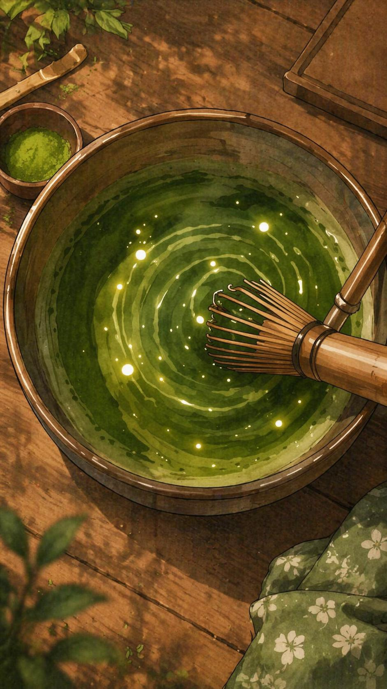
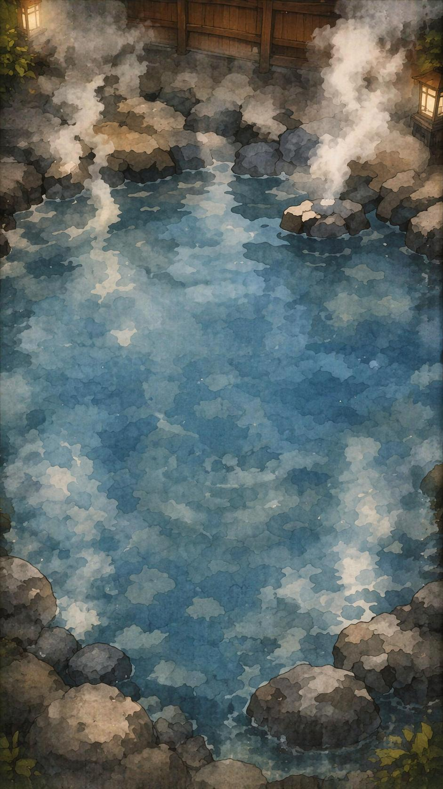
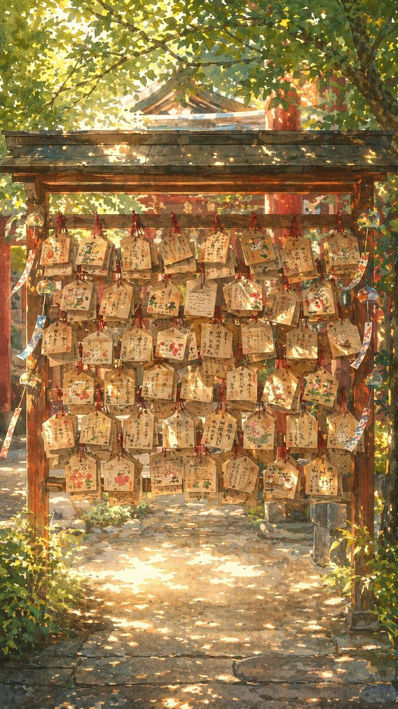
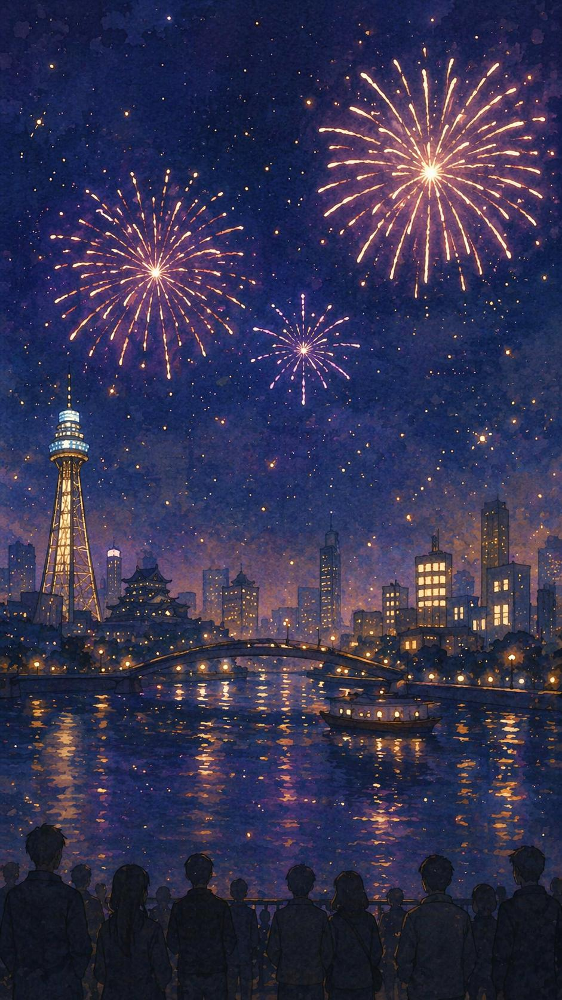
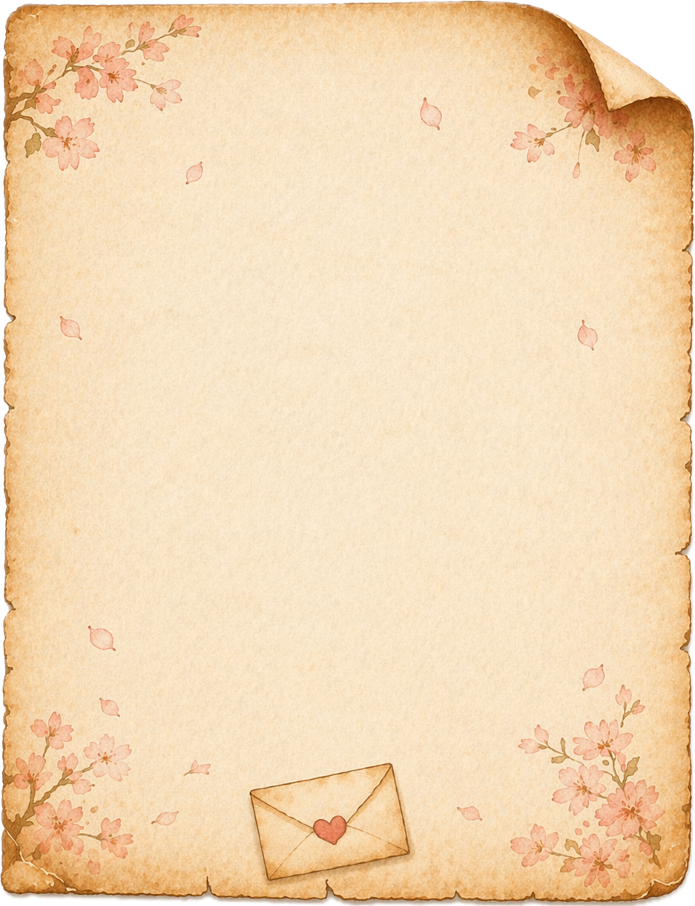
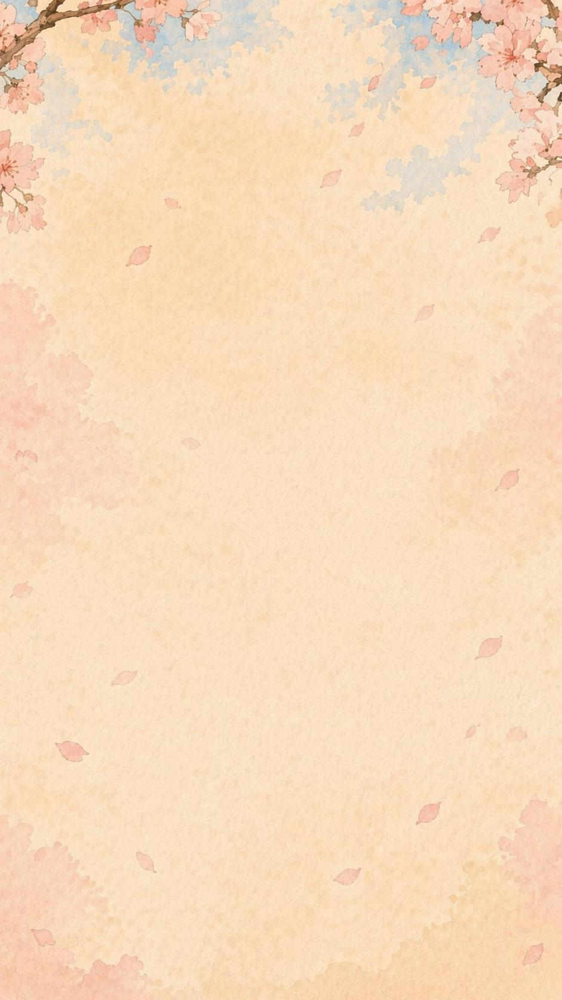

菠萝
鹅鹅鹅
大阪冒险地图
哇，我最爱喝抹茶了，快点抹茶体验试试！
鹅鹅鹅

🌀 ×0
画满 10 圈获得徽章
鹅鹅鹅
搅起来搅起来，空气里都是茶香啦。
御神籤 · OSAKA MATCHA
抹茶修行达成
慢慢搅开一碗绿意，抹茶体验完成。

♨ ×0
轻点水面 8 次
鹅鹅鹅
泡汤要慢一点，先听水面咕噜一下。
御神籤 · OSAKA ONSEN
温泉疗愈达成
热气升起来了，今日疲惫成功蒸发。

鹅鹅鹅
写认真一点，神明说不定真的会偷看。
御神籤 · SUMIYOSHI
神社祈福达成
心愿已经挂上绘马架，风会替你保管。

🎆 ×0/10
点击夜空，放满十朵花火


她会在办公室里乱走、摸鱼、认真办公。你先看看她在干嘛，再戳她聊天。
工位
零食区
同事位
饭位
走道
MEMORY LOG
0 / 4 任务完成
0 枚图鉴
0 段聊天